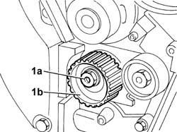

1032C10 Timing belt MOVING TENSIONER - R.R. with timing belt/chain removed
- Path
- Procedures > 10 ENGINE > 1032 timing system > 1032C TIMING SYSTEM TENSIONERS > 1032C10 Timing belt MOVING TENSIONER - R.R. with timing belt/chain removed
- Kind
- repair procedure (removal / refitting; the operation number is the code)
- Applies to
- engines: 2.0 TB, 2.4 20V; all production periods
- Interactive page
- https://sloeber94.github.io/elrnDB-lThss/en/#/74869
Applies to: engines: 2.0 TB, 2.4 20V; all production periods
 Removing
Removing
 Refitting
Refitting1. Completely undo the nut (1a) loosened previously for the removal of the timing drive belt and remove the moving timing system tensioner (1b).

Applies to: engines: 2.0 TB, 2.4 20V; all production periods
Refitting
Removing- Position the moving timing system tensioner in its housing and secure it without tightening the nut.